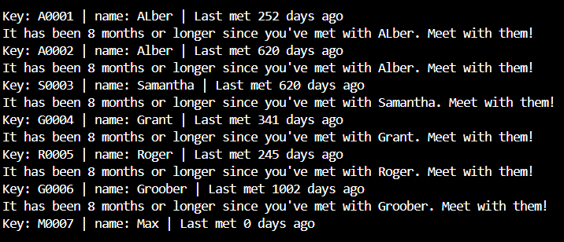

Piano Practice Piece Picker
My first personal project, the Piano Practice Piece Picker, marked the beginning of my programming journey. Although it was a simple program that randomly selected a piano piece from a file, it represented an important step for me. This project pushed me beyond the boundaries of class assignments and allowed me to explore coding in a more personal and creative way. It helped me gain confidence in using programming to solve everyday problems and sparked my passion for developing practical and enjoyable tools.

Friendship Renewal Program
The Friendship Renewal Project was an important milestone in my programming journey, combining functionality with personal value. The goal of the project was to create a simple way to track the times spent with friends and use a single button to determine if it was time to reconnect with someone to renew the friendship. This project helped me prioritize meaningful relationships while learning key programming concepts, such as writing and reading CSV files and organizing code with functions. It was a practical and rewarding experience that strengthened both my technical skills and my understanding of how programming can enhance daily life.


Fitness Frogs
During the BYU-I Hackathon 2024, I collaborated with a team to create the Fitness Frog app, a gamified fitness tracker designed to encourage consistent workouts. The app integrated with Apple Fitness to track workouts, allowing users to help a virtual frog grow with regular exercise—or risk its demise with inactivity. Working on this project under a 24-hour deadline taught me the importance of teamwork, as we divided roles based on individual strengths, even beyond programming. I also gained experience in wireframing, project planning, and understanding how polished design and effective presentation can elevate a project’s appeal. This fast-paced event strengthened my ability to work under pressure, think creatively, and deliver results as part of a team.